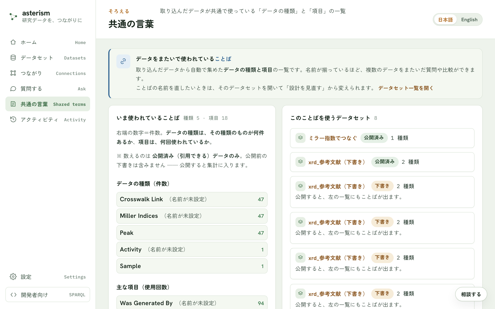

共通の言葉 — ことばを揃える・標準に合わせる
共通の言葉とは
取り込んだデータが使っている「データの種類」と「項目」の一覧を、共通の言葉と呼びます。複数のデータセットで名前が揃っているほど、データをまたいだ質問や比較ができるようになります。
入口
メニューの「共通の言葉」から、いま使われていることばの一覧を見られます。
{kind=link}

一覧の見方
一覧に並ぶのは、いま使われていることばです。データの種類は件数（その種類のものが何件あるか）、項目は使用回数で表示されます。数えるのは公開済みのデータだけです。公開前の下書きは含まれず、公開すると集計に入ります。
それぞれのことばには、そのことばを使っているデータセットの一覧も付きます。
ことばの名前を直す
ことばの名前を直したいときは、そのデータセットを開いて「設計を見直す」ボタンから変更できます。複数のデータセットが共通で使うことばは、名前を変えるとそれを使うすべてのデータの検索・回答に影響するので注意してください。
標準のことばに合わせる（任意）
自分のデータ専用のことばを、よく使われる標準のことば（QUDT・schema.orgなど）に結びつけることができます。合わせておくと、他のデータと自動でつながり、外部のツールや AI もそのまま理解できます。合わせるかどうかは任意で、合わせなくても検索・引用はそのまま使えます。
合わせ方
データセットの「中身」タブを開き、候補から選びます。候補は標準のことばの一覧から機械的に探すもので、AI は使いません。英語のふつうの言い方（例: temperature, crystal structure）でも検索できます。合わせたい候補が見つかったら「この標準に合わせる」ボタンで確定します。あとから解除することもできます。
この列は何を測っているか
項目名を標準に合わせるのとは別に、「この列は何を測っているか」という問いにも合わせられます。単位が手がかりになるので、項目名が略記でも見つかることがあります。合わせておくと、「熱伝導率を測った人」のようにデータをまたいで横断的に探せるようになります。
すでに使われている標準
データの中ですでに使われていた、よく知られた標準のことばは、自動で検出されて一覧に表示されます。あらためて合わせる操作をしなくても、最初から標準に沿っている場合はそのまま表示されます。
関連
- データどうしをつなぐ話は crosswalk.md を参照してください。
- 公開の流れは getting-started.md を参照してください。